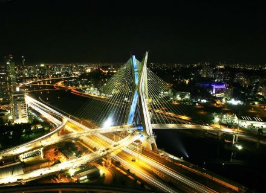

Uma cidade ou urbe é uma área urbanizada, que se diferencia de vilas e outras entidades
urbanas através de vários critérios, os quais incluem população, densidade populacional
ou estatuto legal, embora sua clara definição não seja precisa, sendo alvo de discussões
diversas. A população de uma cidade varia entre as poucas centenas de habitantes até a
dezena de milhão de habitantes. As cidades são as áreas mais densamente povoadas do mundo.
São Paulo, uma das cidades mais populosas do mundo,possui uma densidade populacional de
aproximadamente 7,15 mil habitantes por quilômetro quadrado. Enquanto isso, o Brasil, país
onde a cidade está localizada, possui apenas 20 hab/km².
Ao clicar no link abaixo você poderá saber mais sobre a cidade de São Paulo
ir para o final da página
O termo "cidade" é geralmente utilizado para designar uma dada entidade político
administrativa urbanizada. Em muitos casos, porém, a palavra "cidade" é também
usada para descrever uma área de urbanização contígua (que pode abranger diversas entidades
administrativas). Por exemplo, a cidade de Londres propriamente dita possui apenas cerca
de 8,6 mil habitantes. Porém, quando alguém se refere à cidade de Londres, está
geralmente referindo-se à sua região metropolitana, isto é, à sua área urbanizada, que
possui aproximadamente 7,4 milhões de habitantes.
Tóquio, muitas vezes descrita incorretamente como uma cidade, é na verdade uma
metrópole do Japão, formada por 23 bairros diferentes.
Estudos mais recentes procuram abordar a Cidade a partir de uma perspectiva mais complexa.
Uma formação urbana ou um aglomerado humano, para ser mais adequadamente chamada de "cidade",
deveria apresentar um certo conjunto de aspectos, entre os quais:
Clique para saber sobre Indaiatuba:
Informações sobre Indaiatuba
Clique na imagem de um ponto turistico da cidade de São Paulo saber mais sobre a cidade:

Gostaria de saber sobre o Rio de Janeiro?
clique Rio de Janeiro
ir para o inicio da página